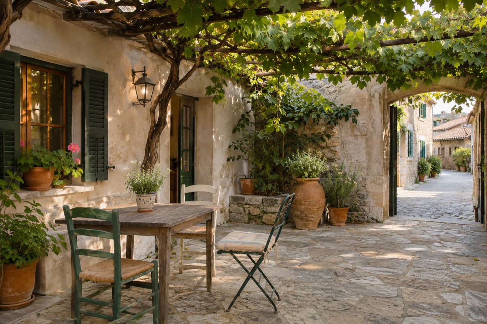

Momentro Guides · Family trips and events
How to organize videos from a multi-day trip or family event
Your phone has the first afternoon. Someone else filmed dinner. The camera still has three days on its card. Here is a manageable way to bring the pieces together.

Start with one place to receive the clips
After a family weekend or a trip with friends, the footage tends to arrive in pieces. A few clips appear in the group chat, a relative promises theirs later, and the longer camera recordings are still on a card.
Choose one person to gather the material and one folder on their computer to receive it. Give that folder a name everyone will recognise, such as 2026-08 — village holiday or 2026-09 — anniversary weekend.
You can begin with what has arrived. The folder does not have to be complete before you make a useful start.
Ask for a small, clear contribution
“Send me everything” can become a bigger task than anyone intended. Instead, ask each person for their favourite clips and any moments the others missed: an arrival, a speech, a walk, a conversation, or the view from their side of the table.
A message can be simple: “Could you send the original clips you would most like in the film, especially anything the rest of us did not record?” Agree on a practical day to send them by, so you can start a first version.
Ask whether anything should stay out of the film or be kept within the family. A shared recording is not automatically permission to share it with a wider audience.
Keep originals separate from chat copies
A clip in a conversation is useful for deciding whether you want it. Before you build the film, ask for the original file or a transfer that preserves it. Messaging and sharing options vary, so check what arrived instead of assuming every download is the same version.
Open a few transferred files. Check that they play with sound, that a long recording has its ending, and that the picture looks as expected. Keep source copies and a separate backup before clearing a phone or camera card.
For a large collection, an external drive or a local file transfer may be more practical than uploading everything. If you do use a shared folder online, choose who has access and agree how long it should remain available.
Keep the days and contributors easy to recognise
Inside the main folder, use dated folders for each day. Within each, keep a simple source label such as Alex-phone, Sam-camera, or drone. That makes it easier to return to the original when two clips have the same name.
A compact example is 2026-08-14 — arrival / Alex-phone, followed by 2026-08-15 — coast / Sam-camera. Preserve file extensions and keep the originals in their source folders while you work.
Device clocks can disagree, especially across time zones. If the apparent order looks wrong, use a shared moment—a meal, a song or an arrival—to work out roughly where the clips belong. Leave a short note rather than trying to fix the whole archive at once.
Choose chapters before choosing every shot
A three-day event does not need three equally long sections. Try a few plain chapters: arriving, the main day, and the quieter morning after. A road trip might follow a first stop, a place you stayed, and the journey home.
For each chapter, choose a view that gives context, an action or shared moment, and a detail you want to remember. The different devices may contribute different things: a wide camera shot, a phone recording of a laugh, a short aerial view of the route.
When two people recorded the same scene, you can keep the view that adds most to this version. Leave the other safely in the original collection. Nobody needs equal screen time for their device.
Let late clips wait for a clear decision
There is often one more message just as you are ready to finish. If the new clip fills an important gap, it may be worth adding. If it is another view of something already there, save it with the originals and carry on.
A first finished film can be a chapter of the trip. It does not have to include every file or settle every memory.
When you ask someone to review, give them a specific question: is there an important person or moment missing, or anything they would prefer removed? That is easier to answer than an open request to redesign the whole film.
Bring the selected set into a desktop project
Once the contributions are gathered, you can bring the selected clips into Momentro on your computer. Momentro does not collect files from the other guests for you; gathering and backing up the source material happens first.
Several days of footage from phones, cameras and a drone can take up a lot of space. Analysis and export happen on your computer, so you do not need to upload that collection to a cloud editing service for those tasks.
Start analysis and get on with your day while it runs. Processing time depends on the footage and your computer. Return to review the draft, make any adjustments you want, and start export when it feels ready. The computer can keep working while you make dinner or do something else.
Give the shared memories one film to come back to.
Momentro helps turn selected family and travel clips into a draft you can review and export on your computer.